Roue ar Romani
Le Roi de Romanie - The King of Romany
Texte recueilli par François-Marie Luzel:
auprès de Jeanne Le Rolland, de Pluzunet, en 1867Publié dans "Gwerzioù Breizh-Izel, tome I", page 178, en 1867
Classification Malrieu: M-00150
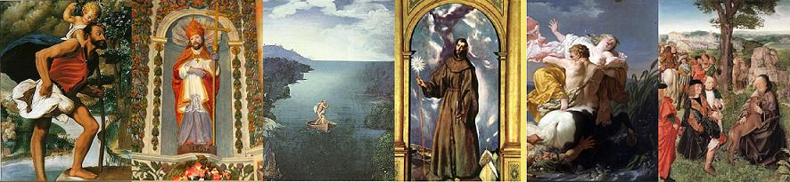
St Christophe, St Loup, Charon, St Bernardin, Nessus et Déjanire, St Gilles,
Mélodie
"Le marié enragé"
Collecté Par l'Abbé Cradoux, recteur de Croixanvec en juillet - août 1926.
Mélodie publiée par l'Abbé François Cadic,
dans la "Paroisse bretonne de Paris", en juillet août 1925.
Utilisée ici à titre d'illustration sonore.
Arrangement par Christian Souchon (c) 2012
|
ROUE AR ROMANI Gwez kentañ I 1. P'oa roue 'r Romani 'pourmen, Hag hen 'welet ur goulmik wenn ; Ur goulmik wenn dimeuz ann ef, 'Gomzaz out-han a beurz Doue. 2. - Roue 'r Romani, kuita da di, Ha kerz da chomm d'ann Normandi ; Red 'vo did kuitad d' rouantelez, Kent wit antren er gristenez ! - 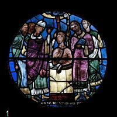 3. Roue 'r Romani p'hen euz klewet, D'he bried paour hen euz laret : - Gret-c'hui er-vad d'hon bugale, Me a ia brema da vale. - 4. - Mar et, m' fried, me iel' iwe ; Petra 'vo gret d'hon bugale ? - - C'hui dougo unann ha me daou. Pa veomp skuiz, ni ziskuizo : 5. Pa veomp skuiz, ni ziskuizo, Ann amzer bepred 'dremeno ; Ann amzer bepred 'dremeno, Hag hon buhe a divezro. - [1] II 6. Kement ho deuz gret o kerzet, M'int gant ur chapel arruet ; Bars ar chapel p'int antreet, War ho daoulinn int em strinket 7. Hag hi 'welet viziblamant Korf Jezuz 'n ur c'haliz arc'hant ; Korf Jezuz 'n ur c'haliz ardhant, 'Wit reï d'he ho femp 'r vadeziant. 8. P'ho deuz 'r vadeziant resevet, Gant ho hent adarre 'z int et ; Gant ho hent adarre 'z int et, En bord ar mor 'z int arruet. 9. En bord ar mor p'int arruet, Saludi 'r pasajer 'deuz gret : - Pasajer paour, mar am c'haret, Tremenet anomp 'n ur vaged. - 10. - Roët d'in dorn 'nn dimezel-ze, Ha me hi c'hasso d'ar c'hoste. - - N'omp ket kement 'n ur vandennad, Na iefomp pemp en ur vagad. - 11. - Roët d'in dorn 'nn dimezel-ze, Me deuio d'ho kerc'had goude. - N'oa ket 'n anter ar mor rentet, Afront d'ez-hi hen euz bet gret. 12. - Itron Varia ann Drindet ! Preservet ann-on d'am friet; Preservet ann-on d'am friet, Biskoas ar sonj-se n'am euz bet ! - 13. N'oa ket hi gir peurlavaret, 'R c'hurun ann ef 'zo diskennet ; 'R c'hurun ann ef 'zo diskennet Hag ar vag 'zo daou-anteret ! 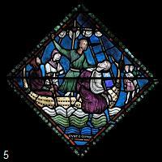 14. Ar vag a zo daou-anteret, Hag ar pasajer 'zo beuzet ; Ar pasajer a zo beuzet, 'R rouanes d'ar c'hoste kasset : 15. - Itron Varia ann Drindet, Setu me ama dilezet ; Dilezet pried, bugale, Birwikenn n' welann ann ez-he ! - III 16. Rouanes Romani 'lare, En hostaliri p'arrue : - Roët d'in-me boed ha dillad, Me chomo 'n ho ti d' labourad ; 17. Me chomo d' labourad 'n ho ti, 'Reï dantelez hag aouraji..... . . . . . . . . . . . . . . . . . . . . . . . . . . . . . . . . IV 18. Roue 'r Romani a lare D'he vugaligou en eur-ze : - It war ma c'houk, ma mab-henan, 'Tre ma diou-vreac'h m' mab bihannan ; 19. M' mab entre-henan, chomet aze, Me deuio d'ho kerc'had goude... - Na pa oa o tremen ar mor, 'Koezaz he vab-henan en dour. 20. P'arruaz gant h' vab entre-henan, A oa ul leon hen tagan ; P'arruaz gant h' vab iaouanka, 'Oa ur bleiz-mor hen ziframma ! 21. Roue 'r Romani a lare En bord ar mor, en he goanze : - Itron Varia ar Folgoet, [2] Setu me ama dilezet ; 22. Kollet pried ha bugale, Birwikenn na welann ann-he ! Birwikenn' na welann ann-he, Ha petra breman a rinn-me -? - V 23. Roue 'r Romani a lare, En ti 'r pinvidik p' arrue : - En hano Doue, un tamm boed, Tri dewez 'zo tamm n'am euz bet ! 24. Penamet eo braz graz-Doue, N'ouzonn penaoz 'haljenn bale ; Roët d'in-me boed ha dillad M' chomo 'n ho ti da labourad ; 25. Me chomo d' labourad 'n ho ti, 'Reï dantelez hag aouraji..... - . . . . . . . . . . . . . . . . . . . . . . . . . . . . . . . . 26. Kriz 'vije 'r galon n' oelje ket 'Welet 'r roue 'vessa ann denved, En he zorn un tamm bara loued, Chass 'r pinvidik n'hen debrjent ket ! 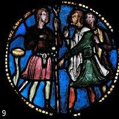 VI 27. Pastor ar roue 'vonjoure Roue 'r Romani, p'hen gwele : - Pastor ann denved, d'in laret, N'oc'h euz gwelet roue a-bed ? - 28. - Me zo seiz bloaz-so gant 'nn denved-man, N' 'm euz gwelet roue-bed 'tremenn aman. - - C'hui 'zo roue ma vis-a-vis, M'ho anvez euz ho fourdeliz. 29. Kassomp d' 'r pinvidik he denved, Hennes a hallo lavaret Penaoz he denved a zo bet Gant ur roue braz diwallet ! - VII 30. Roue 'r Romani 'vonjoure En hostaliri p' arrue : Hotises, d'in-me lavaret, Moïenn a vo da vout lojet ? 31. Moïenn 'c'h euz d' lojan ur roue, Hag he bastor kerkoulz hag hen, Ur plac'hik koant d'ho serviji, N'am euz gwelet biskoas hini 32. Hag a vije ker koant ha hi, Met rouanes ar Romani. - Oh ! ia sur, deuet bars ann ti, Moïenn 'walc'h 'zo d'ho serviji... 33. Ma flac'h-ar-gambr, mar am c'haret, Da zerviji ann daol 'teufet ; Seiz bloaz 'zo ez oc'h 'bars ma zi N'ho 'm euz ket pedet d' serviji ; 34. C'hoas n'am bije ket ho pedet, Penamet 'zo 'r roue arruet.....- . . . . . . . . . . . . . . . . . . . . . . . . . . . . . . . . VIII 35. - Plac'hik iaouank, d'in-me laret, Un tamm euz ma flat a' zebrfet ? - Pa eaz d' gommer un tamm er plad, Hi gwalenn aour hen euz gwelet : 36. - Itron Varia ann Drindet, A posubl ve 'vec'h ma fried ! - - Mar oc'h roue, 'vel ma laret, Hon bugale pelec'h int et ? - 37. - Pa oann o tremenn ar mor-braz, Ma mab-henan en dour 'goezaz ; P'arruaz d' vouit m' mab entre-henan, 'Oa ul leon euz hen tagan ; 38. Arru gant ma mab iaouankan, 'Oa ur bleiz euz hen ziframma ! - N'oa ket ar gir peurlavaret, Ar rouanes d'ann douar 'zo koet ; 39. Ar rouanes d'ann douar 'zo koet, Paj ar roue 'n euz hi zavet ; Pal ar roue 'n euz hi zavet, Hi zri mab 'r gambr 'zo arruet. 40. - Ma bugale, d'in lavaret, Ha piou hen euz ho mailluret ? - - A-fonz ar mor un dimezell-wenn A deue bemde d'hon kelenn ; 41. A deue bemde d'hon kelenn, Da ziluia hon bleo-melenn..... - . . . . . . . . . . . . . . . . . . . . . . . . . . . . . . . . IX 42. Ann aotro sant Loup ha sant Gili, Ar mab iaouank sant Bernardi, 'Zo tri mab roue 'r Romani, 'Zo et da chomm d'ann Normandi. [4] [5] Kanet gant Janet Ar Rolland e Pluzet, 1867 |
ROUE AR MANI Eil Gwez [3] I 1. Disul da noz, goude ma c'hoan, 'Z on em wisket, wit partian: 'Tont ul luc'hedenn uz d'am fenn, Ken 'sklezrie tro-dro ann dachenn! 2. - Roue 'r Mani, poent eo monet D'glask badeziant d'ho inosanted; D'glask badeziant d'ho inosanted Did da unann ha d'as pried ! - 3. Roue ar Mani a lare Er ger d'he bried, p'arrue : - Ma fried, me ia da vale, Pa vin me bet, c'hui iel' iwe. - 4. - Mar et, ma fried, da vale, Me a ielo ganec'h iwe. - - Mar eomp da vale hon daou, Pelec'h iel' hon bugaligou ? - 5. - Chui 'zougo unan, ha me daou, Doue hag 'r Werc'hes hon zikourou..... - Doue hag 'r Werc'hes deuz ho zikouret, Ann hent-mad ho deuz kommerret. II 6. 'Tal ur chapel int arruet, Badeziant ho deuz goulennet. 'Nn aotro sant Iann 'n euz ho badezet, Doue hag 'r Werc'hes deuz ho dalc'het. 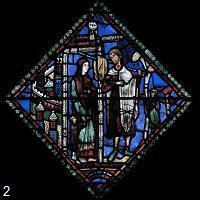 9. Ann hent-mad ho deuz kommerret, 'Tal ar mor-braz int arruet ; 'Tal ar mor-braz int arruet, Ha goulenn tremenn ho deuz gret. 9 bis. - Tremener, lares-te d'in-me Te hon zremenfe d' vont d'ar c'hoste ? M'am zremenes, ma zremenn kouit, N' 'm euz ket a 'vado da rei did. 10. Me 'zo deut aman a bell bro, Am euz roët ma holl vado. - - Deut d'in krog en dorn ar vroeg-ze, M'hi zremeno d' vont d'ar c'hoste. - 11. Anter 'r pasaj p'eo arruet Drouk-ober d'ez-hi 'n euz c'hoantet ; 'R vag war hi geno 'zo troët Hag ann tremener 'zo beuzet !..... III (a) Ar vroegik koant a c'houlenne, 'N ti ar pinvidik p'arrue : - En han' Doue, un tam bara, Tri de 'zo na zebriz netra ! (b) Ma miret 'n ho ti d' labourat, Pinvidik m'ho servijo mad ; Me a reï skool d'ho pugale, Ho disko d' serviji Doue, 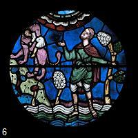 (c) Koulz hag am bije gret d'am re, Siouas ! ma oann chommet gant-he. - - Et duze d'ann hostaliri, Eno 'kavfet da serviji. - 16. Ar vroegik paour a c'houlenne, 'N tal 'n hostaliri p'arrue : - Ma miret 'n ho ti d' labourat, Hostises m'ho servljo mad ; 17. Me a reï skool d'ho pugale, Evel am bije gret d'am re ; Evel am bije gret d'am re, Ma vijenn bet chommet gant-he. - 17 bis. - Deuet en ti hag azeet. Ken vo klewet gant ma fried ; Ken vo klewet gant ma fried, Rag laret d'ac'h na hallann ket.. ... - IV 23. Roue ar Mani a lare, En ti 'r pinvidik p'arrue : - En han' Doue un tamm bara, Pell-braz 'zo na zebris netra ! 24. Ma miret 'n ho ti d' labourat, Pinvidik, m'ho servijo mad..... - Roët tranch d'ez-han , d' dorri havrek, Met allas ! n'ouïe mann a-bed ! 26. Roët 'zo d'ezhan 'n tamm bara-loued, Da vont d'al lann gant ann denved..... Bet eo seiz vloaz 'l lann gant ann denved, Gant un tammik kreun bara-loued. 27. Pa oa ar seiz bloaz achuet, Baroned el lann 'zo arruet : - Na mesaër, lares-te d'in, Na t'euz gwelet roue 'r Mani ? 28. - M'eo roue ar Mani 'glasket, Me gred eo out-han a komzet : Me 'zo seiz bloaz 'zo gant 'nn denved, Gant un tammik kreun bara-loued. 29. Kasset d' 'r pinvidik he zenved Hag he dammik kreun bara-loued..... - Ar baron-man a c'houlenne, 'N tal 'nn hostaliri p'arrue : 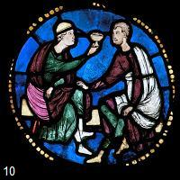 30. Beza 'zo 'n hostaliri-ma D'am baroned ha me d'goania ; D'am baroned ha me d'goania, Ur plac'hik koant d'hon servija ? - 33. - Ur plac'h 'zo seiz bloaz-so em zi, Biskoas n' deuz servijet hini ; Biskoas hini n' deuz servijet, Me garr 'nn ez-hi dreist ma merc'hed. - 34. Mar koaniomp fenoz en ho ti 'Teuï 'r plac'hik koant d'hon serviji ; 'Teuï 'r plac'hik koant d'hon serviji, N 'hon euz drouk-bed d'ober d'ez-hi. - 35. Na pa oa ar goan preparet, Plajou war ann daol digasset : - Plac'hik iaouank, laret-c'hui d'in, C'hui debrfe 'n tamm er plad ganin ? - 36. - Itron Varia ann Drindet, Petra 've kaoz na rafenn ket ? Petra 've kaoz na rafenn ket, Alies, 'kredann, am euz gret ! ..... Kanet gant Marianna An Noan, paourez-koz, paroz Duault |
LE ROI DE ROMANIE Première version I 1. Au cours d'une promenade Du Ciel vint en ambassade Au bon roi de Romanie Une colombe jolie: 2. - Va-t-en, roi de Romanie, Va-t-en vivre en Normandie! Cette terre n'est plus tienne. Va donc en terre chrétienne! 3. "Soucieux de notre ménage, Femme, durant mon voyage, Nos enfants je vous confie." Dit le roi de Romanie 4. - Vous me laisserez, j'espère - Mais nos trois enfants qu'en faire? - Mettre mes pas dans les vôtres. - Portez-en un, moi les autres. 5. En chemin faisons des pauses Quand la fatigue l'impose. Le temps passera, patience, Rognant sur nos existences! - [1] II 6. Longtemps, longtemps ils marchèrent. Ils virent un sanctuaire. A l'intérieur ils pénètrent. A genoux tous deux se jettent. 7. D'un calice d'argent monte Une ombre: Jésus se montre. Le corps de Jésus lui-même Qui donne aux cinq le baptême. 8. Mais même chrétiens, sans doute, Il faut se remettre en route! Ils ont donc repris leur quête. Un bras de mer les arrête. 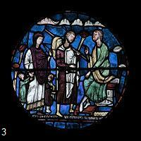 9. Face à la mer, sous la nue, Un homme est là qu'ils saluent: - Passeur, lui dit le monarque, Passez-nous dans votre barque! 10. - La main de la demoiselle, Car la première c'est elle. - La barque est grande, il me semble Que nous n'y tiendrons ensemble. 11. - Sa main! Je l'aide à descendre... Bientôt je reviens vous prendre. - Mais au milieu du passage, Le passeur lui fait outrage. 12. - C'est un roi qu'on déshonore! Dieu, ta protection j'implore! Pareille horrible pensée Jamais ne m'eût effleurée. - 13. Le Ciel entend sa prière: Un grondement de tonnerre, Soudain la foudre est tombée. La barque en deux s'est brisée. 14. Des flots la barque est la proie. Dans l'eau le passeur se noie Et l'autre moitié dérive La reine atteint l'autre rive. 15. - M'avez-vous abandonnée? Des miens je suis séparée: Notre-Dame, Sainte Vierge, Ah, quand-donc les reverrai-je? III 16. La reine de Romanie, Afin de gagner sa vie, Demandait à l'aubergiste: - Des vêtements et le gite! 17. Je veux vous servir dit-elle, Broder, faire des dentelles,... ... ... IV 18. Voyant que l'attente dure, Le roi dans l'eau s'aventure: - Toi, l'aîné, sur mes épaules! Toi, dans mes bras, jeune drôle! 19. Mon cadet, tu dois m'attendre: Je vais revenir te prendre. Mais alors qu'il franchit l'onde, Voilà que son aîné tombe. 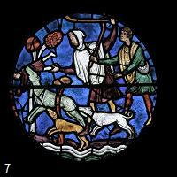 20. Vers le cadet, il s'élance: Mais un lion l'étrangle, immense! Reste le plus jeune encore: Un loup de mer le dévore! 21. Pauvre roi! Fini le rêve! Il est assis sur la grève: - Vierge de Folgoët, Madone, [2] Voici que Dieu m'abandonne! 22. Mes enfants, ma douce amie! Quelle terrible avanie Pour un époux, pour un père! A présent, que vais-je faire? V 23 Le roi que la faim tiraille Sait bien qu'il faudra qu'il aille Pousser la porte du riche Pour quémander une miche. 24. - N'eût été la providence, D'être ici je n'eus la chance. Je travaille, je le jure, Contre gîte et nourriture. 25. Et si votre humeur est telle Je ferai de la dentelle... ... ... 26. Tu ne pleures point? Regarde! Vois ces brebis qu'un roi garde, Du pain moisi pour pitance: C'est celui qu'aux chiens on lance! VI 27. Le berger du roi salue Notre roi de Romanie: - Je cherche un roi. Je demande "L'aurais-tu vu sur la lande?" 28. - Sept ans qu'à cette besogne Je m'emploie sans voir personne. - C'est vous mon roi que je trouve: Ces fleurs de lys me le prouvent. 29. Rendons ses moutons au riche, De son or il n'est point chiche: Ses brebis sont fortunées Qu'un grand monarque a gardées! VII 30. Et le roi de Romanie Entre dans l'hostellerie: - Y a-t-il moyen, l'hôtesse, De loger à cette adresse, 31. Que se chauffe près de l'âtre Un roi qu'accompagne un pâtre? Que les serve la jolie Fille qu'ils ont aperçue? 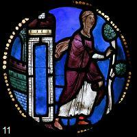 32. Car il n'en est de plus belle. Sauf chez nous: la reine est telle. - [1] - Tout cela je vous l'accorde! Désirs de roi sont des ordres. 33. - Ma fille, soyez aimable Et servez à cette table! Voilà sept ans que j'évite De vous astreindre au service, 34. Mais celui qui vous en prie C'est le roi de Romanie... ...... ...... VIII 35. - Belle, au diable l'avarice, Goûtez ce plat, un délice! - Mais à sa main le monarque Un bel anneau d'or remarque. 36. - Par le salut de mon âme, Seriez-vous ma chère femme? - Oui, celle que vous chérîtes! Mais où sont nos enfants, dites? 37. - Quand nous avançons dans l'onde, De mon dos notre aîné tombe. Vers le second je repasse. En vain: un lion le terrasse. 38. Quand au plus jeune, O détresse! Un loup gris l'a mis en pièces. - Entendant ces mots, la reine S'évanouit. C'est trop de peine. 39. La reine à terre est tombée. Le page l'a relevée, Quand les trois fils, O miracle! Pénètrent dans ce cénacle. 40. - Veuillez me dire, chers anges, Qui donc vous a mis vos langes? - Une blanche demoiselle Nous instruisait avec zèle, 41. La marine créature Démêlait nos chevelures... ... ... IX 42. Ces princes de Romanie Venus vivre en Normandie, Ce sont Saint Loup et Saint Gilles, Et Saint Bernardin, ma fille. [4] à [11] Traduction: Christian Souchon (c) 2013 |
THE KING OF ROMANY First version I 1. There was a king of Romany, Saw a white dove flying fairly; The dove came from heaven above And quoth on behalf of God's love: 2. - Leave your house, King of Romany, And go to stay in Normandy! Give up your realm, quoth the blest wraith, Go to embrace there the true faith! 3. The king of Romany he went To his wife, asking for assent: - Our children I entrust to you. To travel far I say adieu. 4. - Lord, if you leave, with you I'll go. But what about our children, though? - Carry one, I the other two! We will rest when a rest is due! 5. And now let time go by and hours! My dear, just let time take its course! My dear, just let time take its course, Let it gnaw at these lives of ours! - [1] II 6. Both of them walked many a day. They found a chapel on their way. Had entered it to rest at ease, Yet they threw themselves on their knees: 7. Obviously present, they saw, With veneration and with awe, In a gold vase Jesus' body Who baptized all the five godly. 8. So that they were christened that day, But there was no way there to stay. The five again went in God's name, Till to a firth at last they came. 9. The ferryman he was seated On the shore. They duly greeted: - Friend, at a time, you can, I guess, Boat o'er the sea the five of us! 10. - Give me the hand of the lady: I will boat her over firstly. - The boat is not so small that we Could not cross together the sea. 11. - Give me the hand of the lady I shall return to you quickly. - Amidst the sea, beneath contempt, The boatman made a rape attempt. 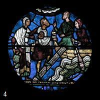 12. - Our Lady, preserve my virtue, For my husband I beseech you, For the man to whom I belong! Never occurred to me such wrong. - 13. Heaven heard her earn'st entreaty: Thunder stroke the boat suddenly. Right suddenly the boat it stroke: The small vessel in two it broke. 14. It shattered it like a nut shell. The boatman in the water fell. The boatman was drowned in water, But the queen she could cross over. 15. - Our Lady of La Trinité, Here I am left, sad and lonely! Husband and children far from me That never again I shall see! III 16. The queen of Romany did say At the guesthouse on that day: - Feed me, allow me here to dwell, Give me clothes and I'll serve you well. 17. I shall work at your inn freely Making lace and embroidery ... ... IV 18. - A long wait is a dreadful thing -. So said to his children the king: - Climb on my back, my eldest son! My youngest, to my arms hold on! 19. My second son, stay here, will you? I'll come back to take you. It's true! But while he was crossing the sound The eldest son fell and was drowned. 20. He hastened to the second son: He was being throttled by a lion! Quick to the youngest he did swim: A sea wolf was devouring him! 21. Poor King! Such awful tale of woe! Sat on the shore, crushed by the blow: - Virgin of Folgoat, your hand stretch! [2] Pity a godforsaken wretch! 22. First my wife and now my three kids! That I should prosper God forbids! Dreadful loss! Happiness, adieu! Woe is me! What am I to do? 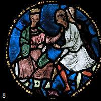 V 23. Now the king of Romany said On ent'ring the rich man's homestead: - I've been three days without eating, For God's sake, please, give me something! 24. But for the mercy of the Lord To walk so far could I afford? Give me food, please, and give me clothes, May I stay? I'll work, same as those 25. Who're employed in your factory: I'll make lace or goldsmithery... ... ... 26. Say, who could refrain from crying, On seeing a sheep guarding sovereign, In his hand a stale piece of bread On which a dog would not have fed? VI 27. Romany's king was, though disguised, By his old shepherd recognized: - Shepherd with your sheep, did you hear Of a king living around here? 28. - I've been a herd for seven years: Such tale never came to my ears. - You are the king I'm looking for: I saw these fleurs-de-lis before. 29. To the rich man return these sheep! He may boast that a king did keep His flock. It is a great deal worth, As he came from across the firth! VII 30. The king of Romany greeted When the hostelry he entered: - Answer me, would you, landlady, Accommodate me fittingly? 31. Would you accommodate a king And his shepherd? Above all things, Could we be served by the girl there Whose beauty is beyond compare? 32. A fairer maid nowhere I've seen Except, perhaps, Romany's Queen. - [1] - Now certainly, please, come right in! A king is welcome in our inn. 33. - My chambermaid, if you love me, A dining waitress you will be. For seven years I've done my best, Shunned making you wait on a guest, 34. And would persist in doing so, But to a king's wish we must bow. ... ... - 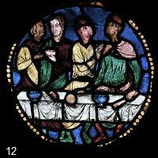 VIII 35. - Come on, young girl, come near my seat! Would you like to taste this meat! - When to the plate she reached her hand He saw her ring, a golden band. 36. - By Our Lady of Trinité, Could you be my wife, really? - And you must be my king, she said. Where are our children? - said the maid. 37. - When we waded across the sound My eldest son fell to the ground. When I came the second to seize: A lion gave his throat a squeeze. 38. As to the third, the truth is grim, A grey wolf was devouring him! - But the king never did speak out: The queen could not withstand the bout. 39. And she swooned at the dreadful news. The pageboy helped her up, confused. What happened in the hall was weird: Their three sons suddenly appeared! 40. - O my dear children, tell me who Changed your blankets and cared for you? - A white maid, from her sea recess, Came daily to look after us. 41. She looked after us, the maid fair, And she untangled our blonde hair... ... ... IX 42. Saint Loup and Saint Gilly the friar As well as Saint Bernardin are Sons to the king of Romany Who came to live in Normandy. [4] to [11] Translation: Christian Souchon (c) 2013 |
|
[1] Citation dans un opéra Frappé par la beauté de ce passage, Henry Bataille (1872 - 1922) l'a repris par dans sa tragédie "La Lépreuse, écrite à vingt ans, dont il a emprunté l'intrigue à un commentaire de La Villemarqué à propos du chant "du Barzhaz intitulé "Le lépreux". Partant de cette intrique, Sylvio Lazzari (1857 - 1944) composa un drame lyrique portant le même titre. A la scène I, Maria Coquart, la mère d'Aliette, va au lavoir et chante (Théâtre complet, T. I page 26, Flammarion, 1922 - Première à Paris à la Comédie Parisienne, le 4 mai 1896): Le Roi de Romani disait à sa femme : Porte tes enfants sur le dos, marchons. Quand nous serons fatigués de corps et d'âme, ayant tant marché nous nous reposerons. Et le temps passera toujours, et le temps passera toujours. [2] La vénération de ND du Folgoët date du début du 15ème siècle, entre 1365 et 1423. [3] La seconde version du Roi de Romanie est moins développée que la première à laquelle elle n'ajoute rien. Elle ne sera pas traduite. Les n° de strophes sont ceux des strophes correspondantes dans la version 1. [4] Le thème de la reconnaissance: Luzel rapproche cette gwerz des ballades françaises: - le Chant de Jousseaume, dans le recueil de M. Jérôme Bujeaud, Chants populaires des provinces de l'ouest (tome II, page 215), - Germaine, dans les Poésies populaires du pays Messin (page 8), par M. le comte de Puymaigre, - Germine, dans les Poésies populaires des provinces de France, par M. Champfleury, - La Pourcheireto, dans les Poésies populaires de la Provence, de M. Damase Arbaud, - ainsi que du Dom Guillermo du Romancerillo catalan de M. Milà y Fontanals, et des gwerzioù bretonnes: - Ar marc'heger hag ar Verjerenn et - An daou vreur (ou An daou vreur, 2ème mélodie) . Tels sont les rapprochements que la scène de la reconnaissance (de l'époux par l'épouse, du frère par la soeur) inspirait à Luzel en 1868, à la date de la publication du Tome I de ses "Gwerzioù Breizh izel". Ce n'est que 21 ans plus tard qu'il publiera dans les "Annales de Bretagne 1889-1890, tome 5", pp.100-115, une troisième version, presque identique à la première, chantée en 1888 par Jeanne-Yvonne Belec à Pedernec (au pied du Ménez-Bré) et évoquera à son propos la légende d'Eustache-Placide. Les références qu'il cite sont innombrables: "Légende dorée" de Jacques de Voragine; "Acta Sanctorum" de Surius (au 20 novembre); "Acta et martyrium s. Eustachii " en grec et en latin de 1660; la "Vita di S. Eustachio martira" de Manzini, Venise, 1653; "Historia d' Eustachio-Mariana" d'Ath. Kircher , Rome, 1665; les "Gesta Romanorum" ou "Le Violier des histoires romaines", ch. XCVIII, p.253 de l'édition claévirienne de P. Jannet, Paris, 1858; "Histoire des livres populaires" de Ch. Nisard, p.186, Paris, 1864. Mais il ajoute, peut-être, pour excuser sa cécité première: "Notre poète breton ne semble pas s'être inspiré de ce cantique, qui est sous forme de dialogue. Mais où donc l'a-t-il puisé? ..." Et il rappelle qu'il a déjà publié dans ses "Gwerzioù" 2 versions de cette pièce, sans s'étendre sur l'inconcevable oubli qu'il avait alors commis. Les différences entre le récit breton et le récit hagiographique amputé, il est vrai, de l'épisode final, celui du martyre, ne sont pourtant que secondaires. Dieu se manifeste au héros sous forme d'une colombe et non d'un cerf. Les noms grecs des protagonistes ont fait place à ceux de saints honorés entre Guingamp et Tréguier: saint Loup de Sens et saint Gilles dont la fête tombe le même jour et saint Bernardin pour le fils "supplémentaire". [5] Un autre rapprochement possible: l'histoire de Pwyll En se référant, l'un et l'autre, à un article de Christophe Vielle: « D'un mythe celtique à un roman hagiographique galate' (Ollodagos 1988-1990, pp. 75-109). deux auteurs contemporains, Claude Sterckx (dans « Mythologie du monde celte », pp.124-127) et Marcel. Brasseur (dans « Les Saints oubliés », p.178-179) rapprochent la légende de saint Eustache, d'un texte gallois, l"'histoire de Pwyll" de la "1ère Branche" des "Mabinogion". Ils voient dans ce récit une « légende hagiographique galate », c'est à dire "celte" d'Anatolie. (Cliquer sur "+")
Lors dune chasse à Glynn Cuch, Pwyll prince de Dyved, se dispute la dépouille d'un cerf avec un autre chasseur, qui nest autre que Arawn, roi dAnnwvyn (l« Autre Monde »). Pour sêtre indûment approprié le gibier, il accepte de réparer et Arawn propose quils échangent leurs royaumes et identités pour une année, au terme de laquelle Pwyll devra se battre contre Havgan, un ennemi dArawn. Pwyll se rend à la résidence dArawn, sous son apparence. Après le repas du soir, il couche avec la reine, mais il ne la touche pas et ne la touchera pas durant son séjour. Lannée passe « dans les chasses, les concerts, les banquets, lamitié et la conversation avec sa compagnie, jusquau soir fixé. » Au jour dit, il va se battre contre Havgan et le tue du premier coup. Pwyll « reçoit lhommage des guerriers » et règne sur les 2 royaumes, il est surnommé « prince dAnnwvyn ». Puis, il se rend à Glynn Cuch et y retrouve Arawn ; ils reprennent leurs identités et aspects respectifs. Pwyll retourne en Dyved, on le rassure sur la façon dont son royaume a été administré en son « absence » et raconte la vérité aux nobles . (source: Wikipédia). Cl. Sterckx raconte l'histoire de Placide-Eustache en détail (le nom de l'épouse Tatiana, « pourrait être d'origine celtique », le village où Eustache demeure 15 ans porte un nom étrange, Badissos...) L'accent est mis sur le fait que l'épouse est demeurée pure, comme dans l'histoire de Pwyll. Marcel Brasseur distingue dans ce récit 3 étapes : - l'appel de l'au-delà : le cerf, le roi de l'Autre-monde (le Christ) , l'ennemi à combattre (le Diable, puis les Barbares). - le héros perd son identité (perte accompagnée d'une multitude de bienfaits pour Pwyll ou, au contraire du plus complet dénuement pour Eustache (rapprochement discutable !) - le héros est rétabli dans sa condition première. Cette présentation rend plausible le parallèle entre les deux narrations. [6] Une autre référence celte: la geste de Finn L'auteur cité plus haut, Christophe Vielle, a signé une étude qui a un rapport avec notre chant. Il s'agit de « Matériaux mythiques gaulois et annalistique romaine : éléments antiques d'un cycle héroïque celtique » (Persée https://www.persee.fr/doc/ecelt_0373-1928_1995_num_31_1_2066 ) . Il rapproche de la légende d'Eustache et de l'histoire de Pwyll, la geste gaélique de Finn (Fionn Mac Cumhaill) dont un épisode « Acallam na Sendrach ; II 4997-5264 » présente la même série d'événements : - le héros poursuit un cervidé à la chasse - le héros commet une « faute » en s'appropriant ou abattant un animal qui appartient à un être surnaturel qui se manifeste - le héros se met au service de l'être surnaturel dans un conflit qui l'oppose à un ou plusieurs ennemis dudit monde surnaturel - le héros combat cet ennemi et l'emporte sur lui définitivement. [7] Une référence romaine empruntée à Tite-Live Une histoire un peu semblable est racontée dans les annales romaines : le « prodige de Sentinum » (295 av. J.-C.) dont parle Tite-Live (X, 27, 6-9) : Une biche poursuivie par un loup traverse l'espace entre les armées samnites-gauloises et romaines rangées en ordre de bataille. Les Romains épargnent le loup, les Samnites tuent la biche. « Tandis que, rangées en bataille, les armées restaient immobiles, une biche, chassée des montagnes en fuyant un loup, accourt à travers champs entre les deux armées. Puis, les deux bêtes tournant en sens opposés, la biche dirigea sa course vers les Gaulois, le loup vers les Romains. Au loup, les rangs livrèrent passage; la biche, les Gaulois la tuèrent. Dans les premiers rangs, un soldat romain dit alors: "La fuite et le massacre tournent de ce côté, où vous voyez gisant l'animal consacré à Diane; de notre côté, le loup de Mars, vainqueur, sans atteinte et sans blessure, nous a rappelé notre origine Martiale et notre fondateur. » Christophe Vielle pense que les Romains se sont sans doute approprié un thème celte et modifié le récit à leur avantage. Si bien qu'il s'agirait ici encore d'une référence celte. [8] A propos de la Galatie Comme on l'a dit (cf. [5]), on pense que l'origine de cette légende est à rechercher dans la région de l'Anatolie appelée "Galatie", d'après les antiques Galates dont le nom est voisin du mot "Celtes" (gr. Keltoï). C'est, cependant, dans la région voisine de Cappadoce, que cette histoire a laissé des traces visibles: fresques décorant des églises rupestres de la fin du VIIè siècle, jusqu'au XIIIè siècle. Le culte de saint Eustache gagna la France au IXème siècle et au XIIIème s. un poème de 2052 vers fut composé sur ce sujet. Les reliques du martyr arrivèrent à Saint-Denis au début du XIIème s. et une partie en fut donnée à une chapelle des halles de Paris qui deviendra Saint-Eustache. [9] Un mythe universel: la quête de l'harmonie M. Brasseur voit, en outre, dans ce récit, un mythe non seulement celte, mais universel, selon la lecture qu'en fait l'Américain Joseph Campbell dans « The hero with a thousand faces » (1949) : Les légendes de Gilgamesh, Énée, Héraclès, Jason, Tristan, Perceval, etc. mettent enscène un héros de naissance illustre ou surnaturelle qui est investi de la mission de rapporter, aidé d'amis ou de parents, un « objet » de l'Autre-monde garantissant l'harmonie dans celui-ci : l'immortalité (Gilgamesh), une patrie (Rome),l'abondance (les pommes des Hespérides), la richesse (la Toison d'Or) , la souveraineté (Iseult), la transcendance (le Graal). Les Celtes avec leurs récits (Eustache et Pwyll) ont donc leur part dans l'illustration du mythe universel de la quête de l'harmonie dans un monde menacé du Chaos. Une tâche qui, à bien y réfléchir incomberait à chacun de nous. [10] Le thème biblique de l'homme éprouvé Cette vision universelle ne doit pas faire oublier, les autres récits dont lea présente légende s'est nourrie: celui de la conversion de saint Paul,ou celui du refus du personnage biblique, Balaam, de maudire Israël. Sans oublier la ressemblance avec le récit biblique de Job déjà signalée par Jean Damascène, qui fut vers 730 le premier commentateur d'un texte plus ancien (Vie et Passion) qui raconte l'histoire d'Eustache. Ces modèles de foi et d'obéissance appartiennent à un type de conte désigné dans la classification d'Arne et Thompson sous l'indicatif AT938 , "l'histoire de homme éprouvé par le destin". Le « miracle du cerf » n'est pas isolé. On le retrouve à l'identique dans la "Vie de saint Meinulphe de Paderborn" (847) par Sigewald et dans la." Vie de saint Hubert" des Bollandistes (BHL 4001). [11] Entorses à l'orthodoxie Dans le supplément à la "Légende Dorée" où s'entrecroisent Vies des Saints Bretons (venus d'au-delà des mers dans des auges en pierre et autres nefs à basse consommation d'énergie), légende du Graal (le calice dans la chapelle) et mythologie classique (le nautonier Charon et Nessus, le centaure), à grand peine Dieu reconnaîtra les siens. Ces entorses à l'orthodoxie sont-elles l'apanage des sociétés rurales anciennes? Voici, comme preuve du contraire, un message venu des Etats-Unis qui circulait sur Internet en 2013: (Cliquer sur "+")
Les cris d'une mère, incarcérée dans sa voiture,/ surnageaient de ce tintamarre;/ Sa plainte déchirait l'air:/ - Mon Dieu, épargnez mes garçons! -/Elle se débattait pour libérer ses mains punaisées; /Il fallait à tout prix qu'elle se dégage,/ Mais la tôle déchiquetée la retenait de toutes ses forces: /Bel et bien prisonnière. Ses yeux pleins d'effroi zoomèrent/ Sur la banquette arrière où ils auraient dû être,/Mais tout ce qu'elle voyait c'était des vitres brisées/ Et deux sièges d'enfants ratatinés. De ses jumeaux, pas de trace;/ Elle ne les entendait pas pleurer,/ Alors elle pria pour qu'ils aient été éjectés,/ Oh, Dieu, ne les laissez pas mourir! Alors les pompiers sont arrivés avec des tronçonneuses et l'ont délivrée, Mais quand ils ont inspecté l'arrière de la voiture, Ils n'ont pas trouvé les deux garçons, Et les ceintures de sécurités étaient intactes. Ils se sont dit: "Cette femme délire/ Elle était seule dans la voiture,/ Et ils ont voulu l'interroger,/ Mais elle était parie. Des policiers l'ont vue courir, affolée/ Et ses cris couvraient le tumulte:/ Elle suppliait et implorait:/ Aidez-moi à retrouver mes garçons!/ Ils ont 4 ans et portent des maillots bleus;/ Avec des jeans assortis. Un flic annonça, Ils sont dans ma voiture,/ Et ils n'ont pas une égratignure./ Ils m'ont dit que c'est leur père qui les y a mis / Et qu'il avait donné à chacun une glace,/ Puis qu'il leur avait dit d'attendre maman/ Qui viendrait les prendre pour les ramener à la maison./ J'ai fouillé le secteur de fond en comble/ Sans trouver leur père./ Il a dû prendre la fuite,/ J'imagine, et ça c'est pas bien du tout. La maman serrait les jumeaux dans ses bras et dit,/ En essuyant une larme,/ Il n'a pas pu prendre la fuite, vous savez: / Ça fait un an qu'il est mort. Le flic avait l'air déboussolé. Il demanda,/ C'est vrai, ça? /Les garçons ajoutaient: "Maman, papa est venu/ Et nous a dit de t'embrasse./ Il nous a dit de ne pas nous en faire /Que tout allait bien se passer, /Et il nous a fait entrer dans la voiture /Avec le joli phare qui tourne. On aurait voulu qu'il reste, /Parce qu'il nous manque beaucoup, /Mais, maman, il s'est contenté de nous serrer bien fort/Et il a dit qu'il fallait qu'il s'en aille. /Il a dit qu'un jour nous comprendrions /Ey qu'il fallait qu'on soit sage, /Et de te dire, maman, /qu'il veillait sur nous. La maman n'avait aucun doute: /Ils disaient la vérité, /Car elle se rappelait /Les dernières paroles de leur père: /Je veillerai sur vous. /Le rapport des pompiers ne put expliquer /Comment d'une voiture réduite en miettes /Ces trois-là avaient pu s'extraire /Sans une égratignure. Mais sur le rapport du flic était inscrit /En tout petits caractères d'imprimerie, /Un ange a patrouillé ce soir sur cette section de la voie express 109. Quand on a 1000amis, on n'en a pas un de trop. Ce matin-là, quand le Seigneur à ouvert le guichet du paradis, Il m'a vu et Il m'a demandé: 'Mon enfant, quel est ton souhait le plus cher pour aujourd'hui?' J'ai répondu: 'Seigneur, je te prie de prendre soin de la personne qui lira ce message, ainsi que de sa famille et de ses meilleurs amis. Ils le méritent car ils ont toute mon affection. Ce message conservera son effet le jour où vous le recevrez. Voyons s'il est vrai qu'il existe 20 ANGES mais que parfois, quand ils n'ont pas d'ailes nous les appelons PARENTS ET AMIS. Faites passer. Un événement heureux vous arrivera à 11:11 du soir; une chose dont vous attendiez qu'on vous l'annonce. N'interrompez pas ce lien de prière. Envoyez ce message à un minimum de 5 personnes! |
[1] An excerpt quoted in an opera Very struck by the beauty of this passage, Henry Bataille (1872 - 1922) included it in his tragedy "The Leper girl" he wrote when he was twenty. He borrowed the plot from a comment by La Villemarqué to the Barzhaz song "The Leper". Based on the same narrative, Sylvio Lazzari (1857 - 1944) composed an opera that goes by the same title. In scene One, Maria Coquart, Aliette's mother, is at the washing-place and sings ("Théâtre complet", T. I page 26, Flammarion, 1922 - Première in Paris at "Comédie Parisienne", on 4th May 1896): The King of Romany told his wife: Take your kids on your back, lets us walk. Shall we be tired, body and soul, of walking on and on, we shall rest. And time will go by ceaselessly, And ceaselessly time will go by. [2] The veneration of Our Lady of Folgoat started in the early 15th century, between 1365 and 1423. [3] The second version of "King of Romany" is shorter than the first that it by no means completes. Therefore it will not be translated here. The stanzas are numbered in accordance with their counterparts in version 1. [4] The "recognition motive": Luzel parallels this gwerz with the French ballads: - the "Song of Jousseaume", in M. Jérôme Bujeaud's collection of "Chants populaires des provinces de l'ouest" (book II, page 215), - "Germaine", in "Poésies populaires du pays Messin" (page 8), by Count de Puymaigre, - "Germine", in "Poésies populaires des provinces de France", by M. Champfleury, - "La Pourcheireto", in "Poésies populaires de la Provence", by M. Damase Arbaud, - and "Dom Guillermo" in "Romancerillo catalan" by M. Milà y Fontanals, as well as with the Breton ballads: - Ar marc'heger hag ar Verjerenn and - An daou vreur (or An daou vreur, 2nd tune) . Such are the connections that the scene of recognition (of the husband by his wife, of the brother by his sister) inspired in Luzel in 1868, on the date of the publication of Volume I of his "Gwerzioù Breizh izel". It was only 21 years later that he published in the "Annales de Bretagne 1889-1890, Volume 5", pp.100-115, a third version, almost identical to the first, sung in 1888 by Jeanne-Yvonne Belec at Pedernec (at the foot of Ménez-Bré Hill) and connected to it the legend of Eustachius-Placidus. The references he quotes are innumerable: "Golden Legend" by Jacques de Voragine; "Acta Sanctorum" by Surius (item "November 20"); "Acta et martyrium s. Eustachii" in Greek and Latin from 1660; the "Vita di S. Eustachio martira" by Manzini, Venice, 1653; "Historia of Eustachio-Mariana" by Ath. Kircher, Rome, 1665; the "Gesta Romanorum" or "The Violier of Roman Stories", c. XCVIII, p.253 in the Claévirian edition of P. Jannet, Paris, 1858; "History of popular books" by Ch. Nisard, p.186, Paris, 1864. But he adds, perhaps, to excuse his former omition: "Our Breton bard does not seem to have been inspired by this canticle, which is in the form of a dialogue. But where did he get it? .. ." And he recalls that he has already published in his "Gwerzioù" 2 versions of this piece, without mentioning the inconceivable oversight he had then committed! The differences between the Breton song and the hagiographical narrative where the final episode, that of the martyrdom, is missing , are however only secondary. God manifests Himself to the hero in the form of a dove and not a deer. The Greek names of the protagonists have given way to those of saints honoured between Guingamp and Tréguier: Saint Loup of Sens and Saint Gilles whose feast falls on the same day and Saint Bernardin for the "additional" son. [5] Another possible parallel: the story of Pwyll By both referring to an article by Christophe Vielle From a Celtic myth to a Galatian hagiographic novel (Ollodagos 1988-1990, pp. 75-109). two contemporary authors, Claude Sterckx (in Mythologie du monde celte, pp.124-127) and Marcel. Brasseur (in "The Forgotten Saints", p.178-179) brings the legend of Saint Eustace closer to a Welsh text, the "story of Pwyll" from the "1st Branch" of the Welsh "Mabinogion". They see in this story a Galate hagiographical legend, that is to say "Celtic" from Anatolia. (Click on "+")
During a hunting party in Glynn Cuch, Pwyll prince of Dyved, disputes the remains of a deer with another hunter, who is none other than Arawn, king of Annwvyn (the "Other World"). For misappropriating the game, he agrees to make amends and Arawn offers that they swap realms and identities for a year, after which Pwyll will have to fight Havgan, an enemy of Arawn. Pwyll goes to Arawn's residence, under his guise. After the evening meal, he sleeps with the queen, but he does not touch her and will not touch her during her stay. The year passes in hunts, concerts, banquets, friendship and conversation with his company, until the appointed evening. » On the appointed day, he goes to fight against Havgan and kills him with the first blow. Pwyll "receives the homage of the warriors" and reigns over the 2 kingdoms, he is henceforth named "Prince of Annwvyn". Then, he goes to Glynn Cuch and finds Arawn there; they resume their respective identities and aspects. Pwyll returns to Dyved, is reassured of how his kingdom has been administered in his "absence" and tells the nobles the truth. (source: Wikipedia). Cl. Sterckx recounts the history of Placidus-Eustachius in detail (the name of the wife Tatiana, "could be of Celtic origin", the village where Eustache lived for 15 years has a strange name, "Badissos"... ) Whereby the emphasis is on the fact that the wife remained pure, as in the story of Pwyll. Marcel Brasseur distinguishes 3 stages in this story: - the call from beyond: the deer, the king of the Otherworld (Christ), the enemy to fight (the Devil, then the Barbarians). - the hero loses his identity (loss accompanied by a multitude of benefits for Pwyll or, on the contrary, the most complete destitution for Eustace (questionable reconciliation!) - the hero is restored to his original condition. This presentation makes plausible the parallel between the two narratives. [6] Another Celtic reference: Finn's epic story The author quoted above, Christophe Vielle, signed a study which has a relationship with our song, titled "Gallic mythical materials and Roman annalistics: ancient elements of a Celtic heroic cycle" (Persée https://www.persee.fr/doc/ecelt_0373-1928_1995_num_31_1_2066 ) . He relates to the legend of Eustace and the story of Pwyll, the Gaelic gesture of Finn (Fionn Mac Cumhaill) including an episode "Acallam na Sendrach; II verses 4997-5264 that features the same series of events: - the hero pursues a hunting deer - the hero commits a "mistake" by taking or killing an animal that belongs to an oncoming supernatural being. - the hero enters the service of the supernatural being in a conflict which opposes him to one or more enemies of said supernatural world - the hero fights this enemy and defeats him definitively. [7] A Roman reference borrowed from Livy A somewhat similar story is told in the Roman annals: the "wonder of Sentinum" (295 BC) of which Livy speaks (X, 27, 6-9): A deer pursued by a wolf crosses the space between the Samnite-Gallic and Roman armies arrayed in battle order. The Romans spare the wolf, the Samnites kill the deer. "While the armies stood motionless in battle array, a doe, chased from the mountains fleeing from a wolf, ran across the fields between the two armies. Then, the two beasts turning in opposite directions, the deer directed its course towards the Gauls, the wolf towards the Romans. To the wolf, the ranks gave way; the doe, the Gauls killed her. In the first ranks, a Roman soldier then said: "The flight and the massacre turn on this side, where you see lying the animal consecrated to Diana; on our side, the wolf of Mars, conqueror, without attack and without injury, reminded us of our Martial origin and our founder." Christophe Vielle thinks that the Romans probably appropriated a Celtic theme and modified the story to their advantage. So that there would still be a Celtic reference here. [8] About Galatia As we said (cf. [5]), we think that the origin of this legend is to be found in the region of Anatolia called "Galatia", after the ancient Galatians whose name is close to word "Celts" (gr. Keltoi). It is, however, in the neighboring region of Cappadocia, that this history has left visible traces: frescoes decorating rock churches from the end of the 7th century, until the 13th century. The cult of Saint Eustache reached France in the 9th century and the 13th century. a poem of 2052 lines was composed on this subject. The relics of the martyr arrived in Saint-Denis at the beginning of the 12th century. and part of it was given to a chapel in the Market Halls of Paris which would become Saint-Eustache church. [9] A Universal Myth: The Quest for a Harmony token Mr. Brasseur sees, moreover, in this story, a myth not only Celtic, but universal, according to the reading made of it by the American Joseph Campbell in "The hero with a thousand faces" (1949): The legends of Gilgamesh, Aeneas, Heracles, Jason, Tristan, Perceval, etc. feature a hero of illustrious or supernatural birth who is charged with the mission of bringing back, with the help of friends or relatives, an "object" from the Otherworld guaranteeing harmony in this lesser one: immortality (Gilgamesh ), a homeland (Rome), abundance (the Apples of the Hesperides), wealth (the Golden Fleece), sovereignty (Iseult), transcendence (the Grail). The Celts with their stories (Eustace and Pwyll) therefore have their part in illustrating the universal myth of the quest for a harmony token to be brought to a world threatened by Chaos. A task that, come to think of it, would fall to each of us. [10] God will recognize his own This universal vision should not make us forget the other stories on which the present legend is nourished: that of the conversion of Saint Paul, or that of the refusal by the biblical character Balaam, to curse Israel. Without forgetting the resemblance with the biblical story of Job already reported by John Damascene, who was around 730 the first commentator of an older text (Life and Passion) which tells the story of Eustach. These patterns of faith and obedience belong to a type of tale designated in Arne and Thompson's classification as AT938, "the story of the man tried by fate". The "deer miracle" is not a single instance. It is found identically in the "Life of Saint Meinulph of Paderborn" (847) by Sigewald and in the "Life of Saint Hubert" by the Bollandists (BHL 4001). [11] Deviation from orthodoxy In this sort of appendix to Jacobus Voragine's "Golden Legend" we find intertwined: the "Lives of (Breton) Saints" (who crossed the Channel in stone troughs and like low fuel consumption vehicles), the Grail legend (the chalice in the chapel) and classical mythology (river Styx boatman Charon and centaur Nessus). Theologians would look here in vain for usual creed. Were these infringements to orthodox faith idiosyncratic for rural people of old? By no means! As a proof of the contrary, here is a pass-along posted in USA in 2013:(Click on "+"!)
A mother, trapped inside her car,/ Was heard above the noise;/ Her plaintive plea near split the air:/ - Oh, God, please spare my boys! -/ She fought to loose her pinned hands; /She struggled to get free,/ But mangled metal held her fast /In grim captivity. Her frightened eyes then focused/ On where the back seat once had been,/But all she saw was broken glass and/ Two children's seats crushed in. Her twins were nowhere to be seen;/ She did not hear them cry,/ And then she prayed they'd been thrown free,/ Oh, God, don't let them die! Then firemen came and cut her loose, But when they searched the back, They found therein no little boys, But the seat belts were intact. They thought the woman had gone mad/ And was travelling alone,/ But when they turned to question her,/ They discovered she was gone. Policemen saw her running wild/ And screaming above the noise/ In beseeching supplication,/ Please help me find my boys!/ They're four years old and wear blue shirts;/ Their jeans are blue to match. One cop spoke up, They're in my car,/ And they don't have a scratch./ They said their daddy put them there / And gave them each a cone,/ Then told them both to wait for Mom/ To come and take them home./ I've searched the area high and low,/ But I can't find their dad./ He must have fled the scene,/ I guess, and that is very bad. The mother hugged the twins and said,/ While wiping at a tear,/He could not flee the scene, you see, /For he's been dead a year. The cop just looked confused and asked,/ Now, how can that be true? /The boys said, Mommy, Daddy came/ And left a kiss for you./ He told us not to worry /And that you would be all right, /And then he put us in this car with /The pretty, flashing light. We wanted him to stay with us, /Because we miss him so, /But Mommy, he just hugged us tight /And said he had to go. /He said someday we'd understand /And told us not to fuss, /And he said to tell you, Mommy, /He's watching over us. The mother knew without a doubt /That what they spoke was true, /For she recalled their dad's last words, /I will watch over you. /The firemen's notes could not explain /The twisted, mangled car, /And how the three of them escaped /Without a single scar. But on the cop's report was scribed, /In print so very fine, /An angel walked the beat tonight on Highway 109. He who has a thousand friends has not a friend to spare. This morning when the Lord opened a window to Heaven, He saw me, and he asked: 'My child, what is your greatest wish for today?' I responded: 'Lord please, take care of the person who is reading this message, their family and their special friends. They deserve it and I love them very much. This message works on the day you receive it. Let us see if it is true 20 ANGELS EXIST but some times, since they don't all have wings, we call them RELATIVES AND FRIENDS. Pass this on. Something good will happen to you at 11:11 in the evening; something that you have been waiting to hear. Please do not break this prayer; send it to a minimum of 5 people! |

(Cliquer sur "+")